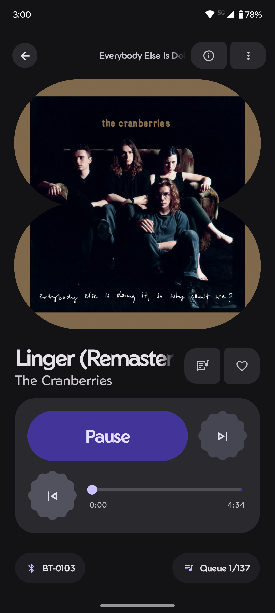
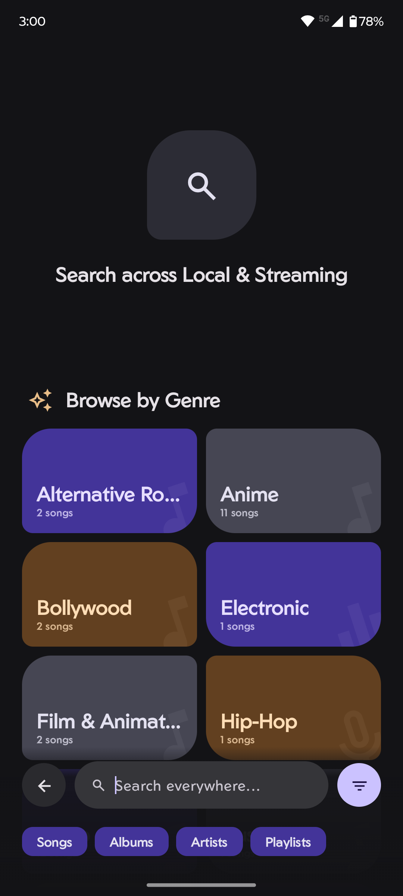

♪
Audio local de verdad
Media3 ExoPlayer, crossfade sin tirones, ecualizador de 10 bandas, Replay Gain y letras incrustadas en FLAC/Ogg/M4A.
Sin streamingUn reproductor de música local para Android con Material 3 Expressive, español completo y animaciones pensadas para móviles potentes y de gama baja.
Diseño propio, motor local y controles que responden igual en un gama alta que en un Tecno Spark Go.
Media3 ExoPlayer, crossfade sin tirones, ecualizador de 10 bandas, Replay Gain y letras incrustadas en FLAC/Ogg/M4A.
Sin streamingPaleta morada del logo, formas squircle, galleta de búsqueda, Melo Wave y motion de alta tasa de refresco.
Identidad propiaDesactiva blur, Canvas animado y movimiento decorativo. Arranque diferido, cachés adaptativas y baseline profile.
Gama bajaPresets de animación, desfase de sincronización persistente y vista completa con carátula y controles táctiles.
LRC + word-by-wordArtistas sin duplicados, álbumes multi-disco agrupados, favoritos, listas y explorador por carpetas sin bloqueos.
Local-firstTiempo de escucha, artistas y canciones principales con vistas por día, semana, mes y año.
Perfil incluidoCapturas reales de la app en teléfono y tablet.
 Inicio
Inicio
Reproductor Letras
Letras
BúsquedaMelo Wave, español completo, Modo básico, presets de letras, perfil, crossfade corregido y baseline profile regenerado.
Letras incrustadas por Uri, cola del explorador con subcarpetas, filtros persistentes, circuit breaker de letras y limpieza de pools de audio.
Compilación `githubRelease`, verificada y lista para instalar. Actualizaciones integradas desde el repositorio.
↓ Descargar APKRepositorio público bajo GPL-3.0-or-later. Compila los flavors `github` y `fdroid` desde el mismo árbol.
★ Ver repositorioLa interfaz en español está completa; otros idiomas se mantienen en el árbol de recursos.
Melo se mantiene en abierto. Cuéntame qué funciona y qué no.
Código, releases y wiki en GitHub.
angel-ssk/Melo ↗Abre un issue con modelo de móvil, versión y pasos para reproducirlo.
Issues ↗Angel (@angel-ssk), desarrollador de Melo.
Perfil GitHub ↗